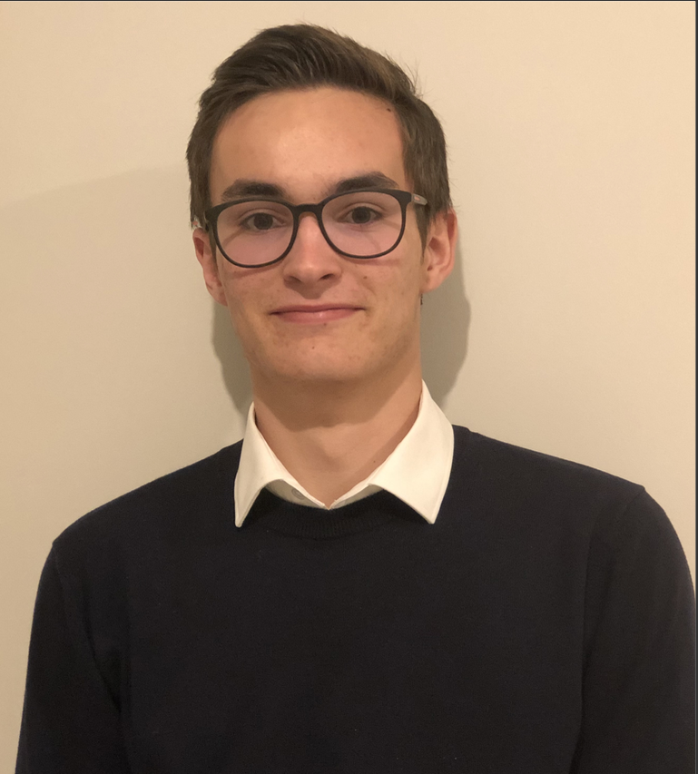
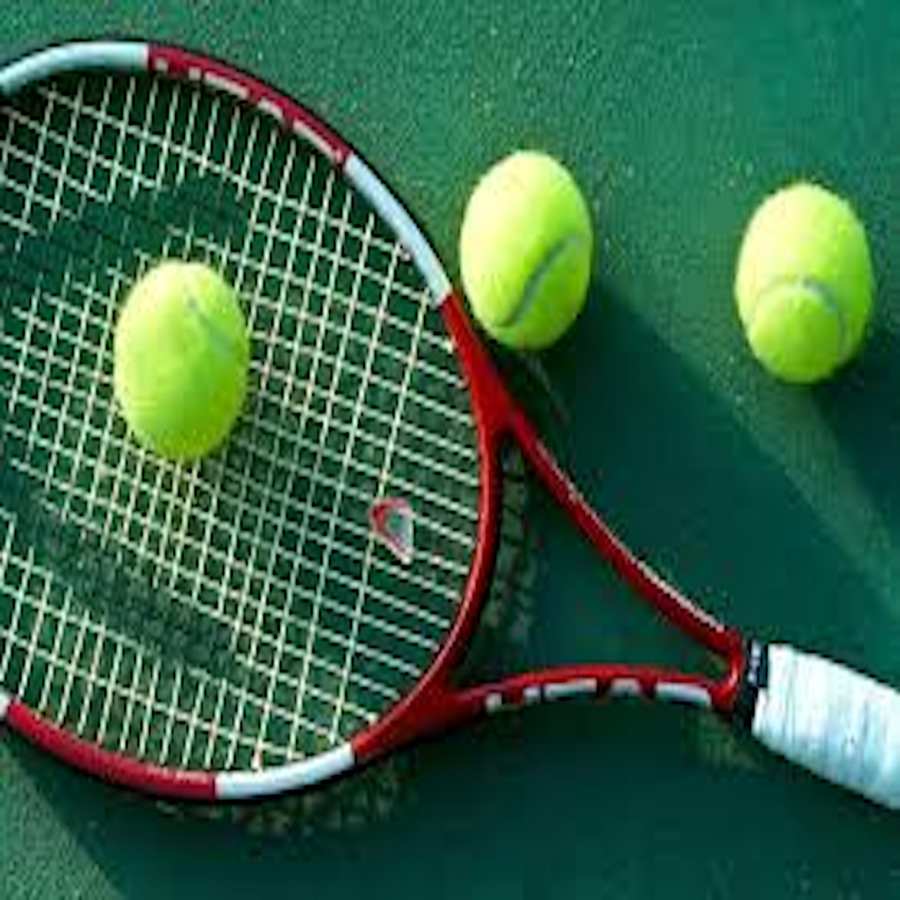
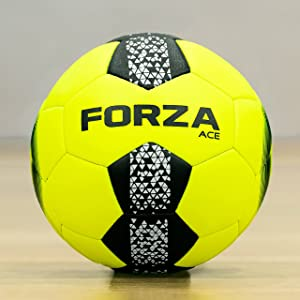
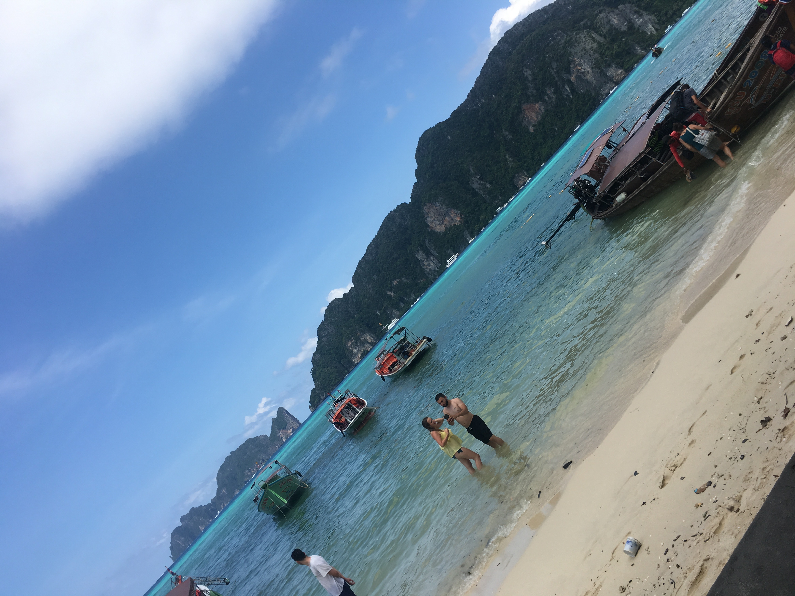
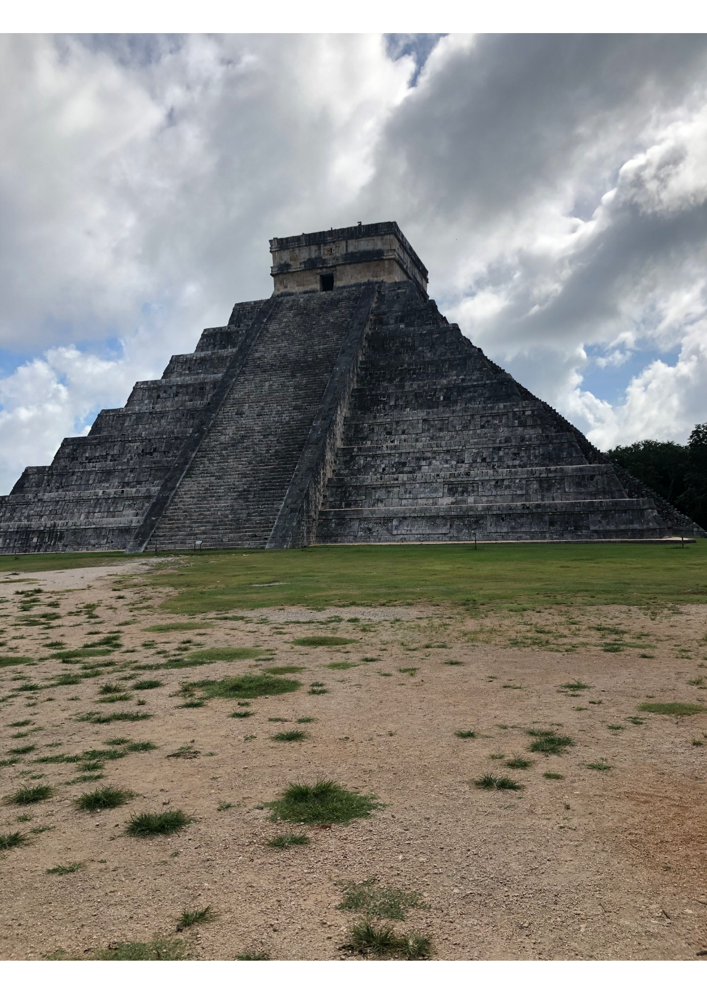

Paul Chaplain's profile
Je suis actuellement en école de commerce à l'ESDES. Je profite des petits plaisir de la vie et je t'invite à rejoindre le groupe si tu en as envie. On peut s'amuser sans se prendre la tête, personnellement je suis bon délire, mais je reste studieux. Les études restent importantes après tout.
🎾 Sport 🎾
Le tennis est ma passion, je pratique ce sporp depuis toujours et c'est un moyen pour moi de m'évader et de relacher la préssion. C'est un domaine dans lequel je me débrouille et pour lequel je prends énormement de plaisir. Je pratique d'autre sport à coté notamment du Handball, c'est toujours bien d'avoir un sport collectif ne serais-ce que pour le mental.
 💰 Finance 💰
La finance est le domaine dans lequel je veux travailler plus tard. J'espère pouvoir en vivre. C'est d'un côté un domaine qui me passionne de part la diversité et les possibilités d'évolution offertes par l'emploi. Mais aussi la prise de risque qui pousse à la réflexion constamment. Pour ces deux seuls points, la finance est une passion.
🛫Les voyages 🛬
Voyager est pour moi une passion et un loisir. Le plaisir de découvir de nouvelle culture, d'être totalement dépaysé dans un lieu que l'on ne connait absolument pas mais qu'on apprécie. Se retrouver confronté à la réalité d'autre personne dans le monde l'espace d'un instant est une expérience unique. Personne ne peut faire deux fois le même voyage et c'est ce que je trouve incroyable.
 ⌛ Expériences Professionnelles ⌛
• Nigloland durant les vacances d'été de 2018. Je faisais un peu tout ce qui était possible d'être fait au sein du parc. Cela passe par la plonge, la cuisine, les masquottes.
•Sur la même année, j'ai fais les vendanges
• En 2020, j'ai travaille au sein d'une usine qui fabrique des vélos éléctriques. J'étais chargé de monter tout le cablage éléctriques des batteries durant 2 mois.
• En 2021, j'ai effectué un stage en assurance de deux mois ou j'ai principalement travaillé sur du marketing et de la communication. J'essayais de simplifier au maximum par le biais de document, la rencontre entre le client et l'assureur.
• Sur la même année après 2 mois de stage, j'ai travaillé en restauration ou j'ai effectué le poste de serveur polyvalent.
💭 Mon Caractère 💭
Je suis quelqu'un de plutot réservé de nature mais je sais m'ouvir aux autres. J'aime faire la fête et profiter des petits plaisir de la vie. J'essaye d'être au maximum concentré dans ma formation afin de réussir et d'atteindre mes objectifs. Je suis toujours souriant et motivé.
📊 Ma Formation 📊
• Brevet de secourisme
•Validation PIX
• BEPC au collège gaston bachelard : mention très bien
• Baccalauréat sans mention au lycé Saint Bernard
• 1ère année en école de commerce : ESDES / université catholique de Lyon

📞 Mon Profil 📞
Adresse Mail : paul.chaplain@esdes.ucly.fr
Numéro de téléphone : 06-31-73-34-36
Linkedln: Paul Chaplain